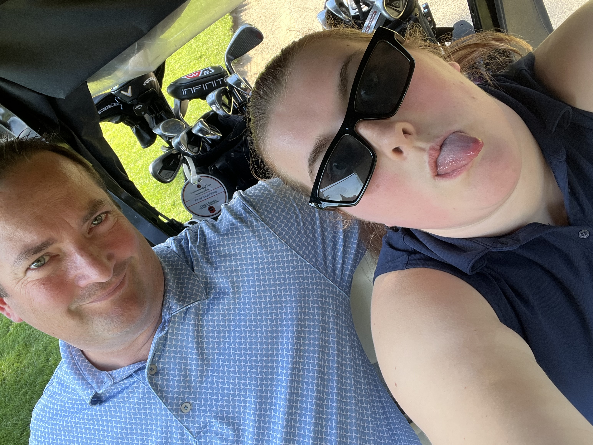

I started playing golf my freshmen year of high school and I fell in love with it almost immediately.
Although sometimes I get mad because I'm playing bad, I really do love playing. I've been able to watch
myself grow over these 5 years that I've been playing.

I've had the opportunity to share this hobby with my dad and it has become a fun way that I can connect with him and learn from him. While being away at school, I've played golf many times, however, I miss playing with my dad.